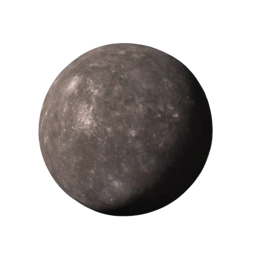
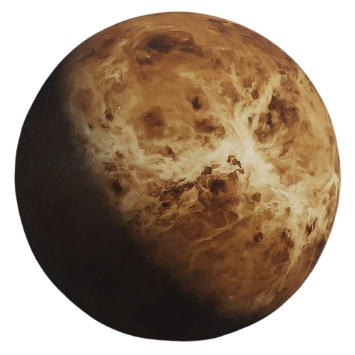
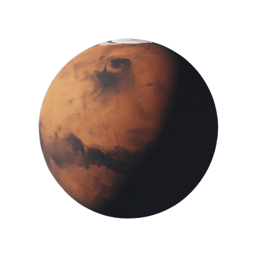
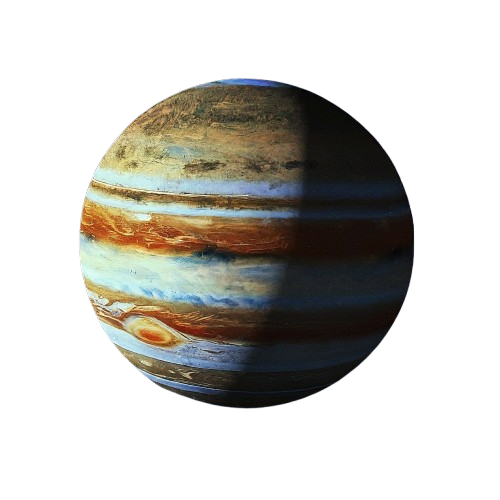
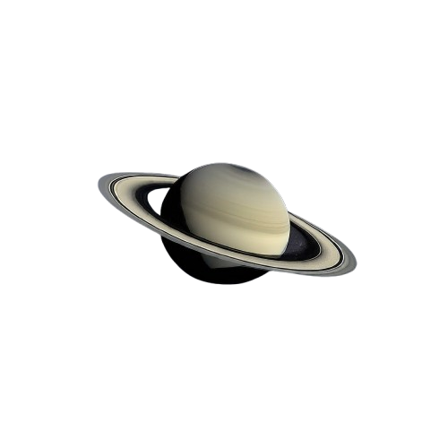
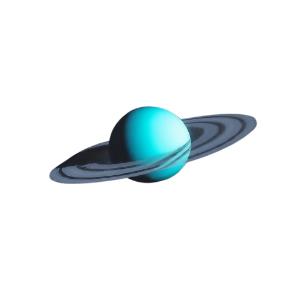
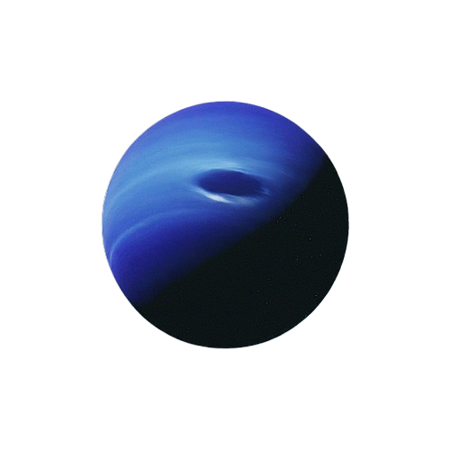

Mercury
- Orbital Velocity: 47.87 km/s
- Distance from the Sun: 57.91 million km (0.39 AU)
- Distance from Earth: 77 million km (average)
- Days in a Year: 88 Earth days
- Relevant Info: Mercury is the smallest planet and has extreme temperature variations.

Venus
- Orbital Velocity: 35.02 km/s
- Distance from the Sun: 108.2 million km (0.72 AU)
- Distance from Earth: 41 million km (closest approach)
- Days in a Year: 225 Earth days
- Relevant Info: Venus has a thick atmosphere and rotates in the opposite direction of most planets.

Mars
- Orbital Velocity: 24.07 km/s
- Distance from the Sun: 227.9 million km (1.52 AU)
- Distance from Earth: 54.6 million km (closest approach)
- Days in a Year: 687 Earth days
- Relevant Info: Mars is known as the "Red Planet" and has the largest volcano in the Solar System.

Jupiter
- Orbital Velocity: 13.07 km/s
- Distance from the Sun: 778.5 million km (5.20 AU)
- Distance from Earth: 588 million km (average)
- Days in a Year: 4,333 Earth days (11.86 Earth years)
- Relevant Info: Jupiter is the largest planet, and its Great Red Spot is a massive storm.

Saturn
- Orbital Velocity: 9.69 km/s
- Distance from the Sun: 1.43 billion km (9.58 AU)
- Distance from Earth: 1.2 billion km (average)
- Days in a Year: 10,759 Earth days (29.45 Earth years)
- Relevant Info: Saturn is famous for its rings and has over 80 known moons.

Uranus
- Orbital Velocity: 6.81 km/s
- Distance from the Sun: 2.87 billion km (19.22 AU)
- Distance from Earth: 2.6 billion km (average)
- Days in a Year: 30,687 Earth days (84 Earth years)
- Relevant Info: Uranus rotates on its side, causing extreme seasons.

Neptune
- Orbital Velocity: 5.43 km/s
- Distance from the Sun: 4.5 billion km (30.07 AU)
- Distance from Earth: 4.3 billion km (average)
- Days in a Year: 60,190 Earth days (164.8 Earth years)
- Relevant Info: Neptune has the fastest winds in the Solar System, reaching up to 2,100 km/h.